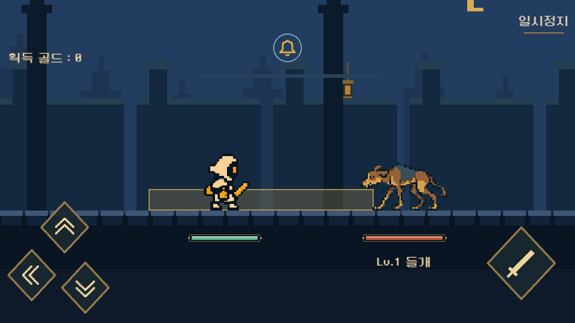
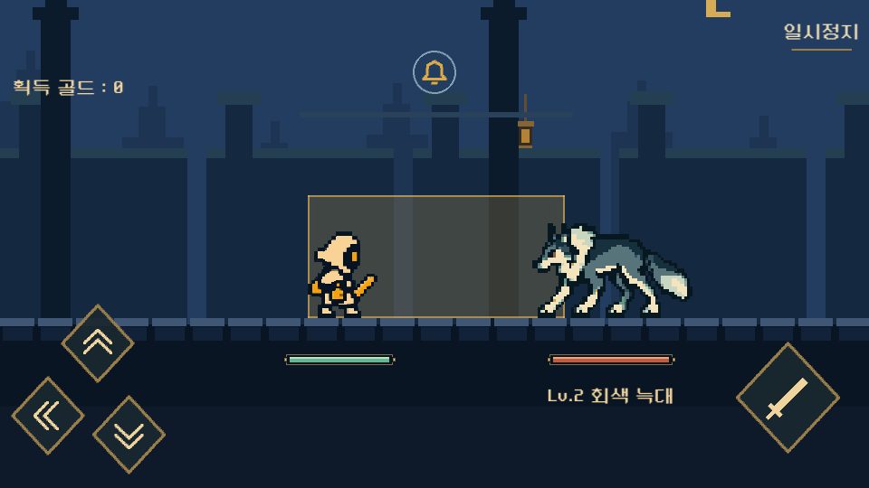
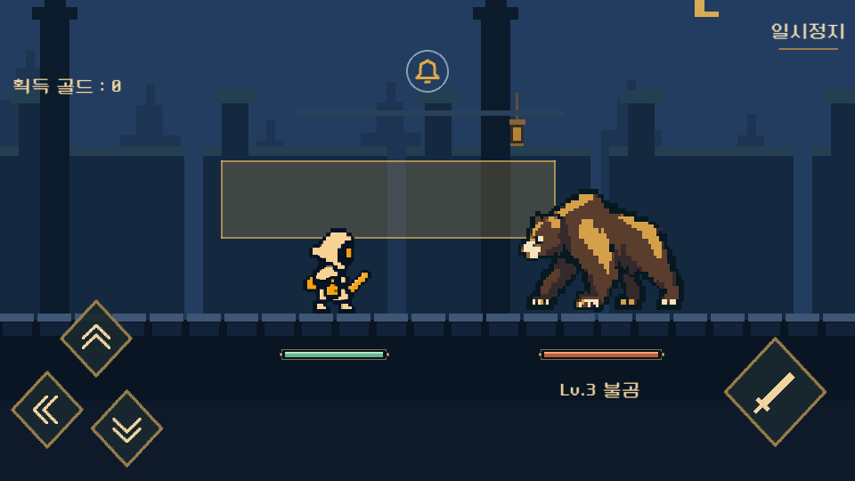
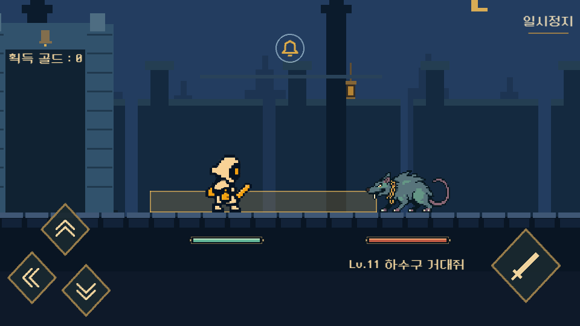
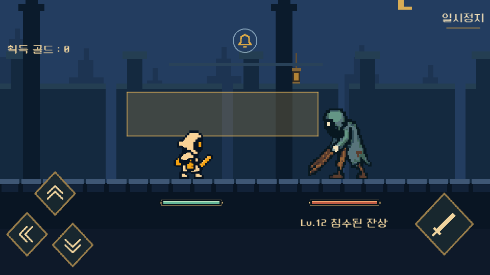
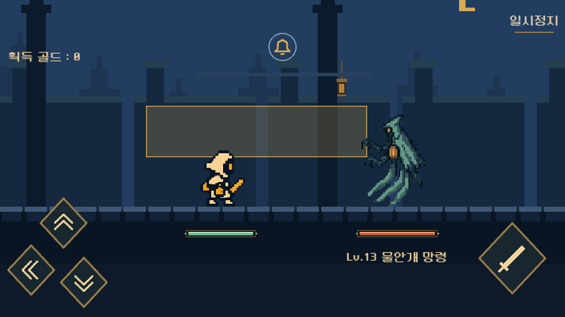

Last Bell v0.8.4게임 적용 · 검증 완료2026.10.23
같은 도트 세계 안에서,
피한 뒤의 한 방을 분명하게
이번 변경은 몬스터 그림체 통일, 공격으로 발동하는 기절, 보유 유물 자동 적용과 보관함 확장, 기존 이야기의 대사 보완이다. 아래는 최종 반영 내용을 확인하기 위한 리뷰 페이지다.
Windows v0.8.4에 적용했습니다. Unity 테스트 204개와 960×540·640×360의 실행 검증 각 357개를 통과했습니다. 아래에서 실제 게임 캡처와 6종 모션을 확인할 수 있습니다.
여섯 몬스터의 도트 규격을 맞춘다
성 밖의 들개·회색 늑대·불곰, 주거구의 거대쥐·주민형 잔상·물안개 망령을 같은 픽셀 밀도와 명암 기준으로 맞춘다. 매끈한 둥근 면과 흐린 경계 대신, 작은 화면에서도 몸의 덩어리가 읽히는 외곽선과 단단한 색면을 사용한다. 10층 종의 기사와 20층 매달린 집행관은 기존 보스를 보존한다.
1~9 · 성 밖
들개는 야윈 몸과 꺾인 귀, 늑대는 각진 목갈기와 긴 꼬리, 불곰은 큰 어깨와 두꺼운 앞발로 구별한다. 같은 그림체로 맞추면서 체형과 무게감은 남긴다.
들개 · 물기늑대 · 도약 물기불곰 · 앞발 강타
11~19 · 물에 잠긴 사슬 주거구
하수구 거대쥐, 젖은 외투와 문짝을 든 잔상, 가슴에 등불이 비치는 물안개 망령을 구분한다. 물과 천의 인상을 내더라도 가장자리를 흐리게 처리하지 않는다.
거대쥐 · 앞니 돌진주민형 잔상 · 문짝 강타망령 · 물결 발톱
검수 자료에는 원본 프레임과 공격·기절 재생을 함께 연결한다. 제작 프레임의 모양 확인과 실제 인게임 타격 시점 확인은 따로 수행한다.
실제 게임에서의 6종 도트 스타일

들개 · Stage 1
회색 늑대 · Stage 2
불곰 · Stage 3
하수구 거대쥐 · Stage 11
침수된 잔상 · Stage 12
물안개 망령 · Stage 13스택을 채운 뒤, 공격을 명중시켜 기절시킨다
1 · 회피로 충전회피 성공으로 기절 스택을 쌓는다.
→
2 · 100에서 준비스택 100을 유지한다. 적은 아직 공격할 수 있다.
→
3 · 명중으로 발동다음 공격이 실제로 맞으면 적이 기절한다.
100을 채우는 순간에는 연속 공격이 멈추지 않는다.남은 적 공격을 읽으면서 공격할 틈을 고른다. 준비 상태에서 공격이 명중하면 그때 남은 적 공격을 취소하고 기절시킨다. 버튼을 누른 것만으로 발동시키지 않는다.
기절을 일으킨 첫 타격
스택을 소비해 기절을 발동한다. 이 타격에는 기절 피해 배율을 추가하지 않는다. 기절 전에 맞은 타격이기 때문이다.
기절한 뒤의 후속 타격
이후 기절 상태인 적에게 명중한 공격부터 기존 기절 피해 배율을 적용한다. 충전, 발동, 공격 기회의 순서가 분명해진다.
준비 상태. 스택이 완성되어도 적의 남은 공격은 계속된다.
공격이 맞는 순간 기절이 시작되고, 남은 연속 공격이 취소된다.
보유한 유물은 모두 자동 적용
유물을 획득하면 자동으로 효과가 적용된다. 장착할 유물을 따로 골라 넣는 대신, 서로 다른 유물을 얼마나 보관할 수 있는지에 한도를 둔다. 기본 3종으로 시작하며 종 파편으로 최대 10종까지 늘린다.
보관한 종류 수를 센다
새 종류를 얻을 때 한 칸을 사용한다. 이미 가진 유물을 다시 얻어 레벨을 높일 때는 칸을 추가로 차지하지 않는다. 보관함이 가득 찼더라도 중복 유물의 레벨업은 가능하다.
기존 보유 내역을 보존한다
저장돼 있는 모든 소유 유물과 과거 슬롯 구매 내역을 유지한다. 기존 유물을 버리게 하거나, 이미 늘린 보관함을 다시 구매하게 만들지 않는다.
보관함이 가득 찼을 때는 선택을 받는다.새 유물을 선택하면 필요한 확장 비용을 보여주고, 확장 후 획득 · 파편 N 버튼으로 확장과 획득을 함께 확정한다. 파편이 부족하면 부족한 수량을 표시하고 해당 버튼을 비활성화한다.
유물 대신 골드를 받으려면 대신 N 골드를 직접 선택한다. 보관함이 가득 찼다는 이유로 유물을 자동으로 골드로 바꾸지 않는다. 화면의 N은 실제 가격과 실제 대체 보상으로 표시한다.
확장 비용을 확인한 뒤 유물 획득 또는 골드 대체를 선택한다.
부족한 파편을 명시한다. 비용을 지불할 수 없을 때 확장 버튼으로 획득되지 않는다.
보관한 유물의 효과가 모두 적용되며, 별도 장착 선택은 필요 없다.
기존 이야기를 이어가는 자연스러운 대사
줄거리는 불씨를 이어받아 등불을 밝히고, 종을 울려 잠든 마을의 아침을 되찾는 여정을 유지한다. 프롤로그는 첫 목적지인 성문을 짧게 안내한다. 10층에서는 주민을 지킨다던 문이 사실은 주민을 가둔 문이었다는 사실을 드러낸다. 20층에서는 빼앗긴 시간이 탑에 남아 있다는 것을 알고, 종을 울려 그 시간을 집으로 돌려보내려 한다.
종의 기사 · 성문의 반전
나는 마을을 지키는 줄 알았다.
그런데 이 문은 주민들을 가두고 있었지.
기사의 책임을 짧은 고백으로 드러내고, 문 너머의 사슬 주거구로 이어간다.
매달린 집행관 · 반환의 목적
사슬로 거둔 시간이 탑에 남아 있다.
이제 종을 울려, 집으로 돌려보내라.
종을 멈추라는 목표로 뒤집지 않는다. 지금까지 켠 등불이 구원의 일부였다는 의미를 이어간다.
프롤로그는 4문단과 기존 18초 스크롤, 건너뛰기를 유지한다. 10·20층 대사는 각각 3페이지이며, 온·담·린의 말투를 나눴다. 새 대사 이벤트나 21층 이후 플레이를 추가하는 변경은 아니다.
대사 전후 비교·선택 주인공별 응답 보기 · 반영용 문구 데이터
기존 화면과 자동 스크롤을 유지하면서 첫 여정의 목적을 분명하게 다듬는다.
검수와 실행 파일
통합 검증 완료
편집 모드 185/185, 플레이 모드 19/19, Windows 실행 검증 960×540·640×360 각각 357/357을 통과했다. 161장 최종 선택 이미지의 원본 해시·이진 알파·팔레트·잘림도 확인했다. 실제 휴대폰 터치 검증은 이번 범위에 포함하지 않았다.
- 6종의 도트 밀도·외곽선·공격과 기절 프레임의 형태 유지. 기존 10·20층 보스 보존.
- 스택 100 직후 적이 기절하지 않고 준비 상태를 유지하는지, 실제 명중 시 남은 공격이 취소되는지.
- 기절 발동 타격과 후속 타격에 적용되는 피해 배율이 구분되는지.
- 보유 유물 전체 효과, 중복 레벨업, 신규 종류 획득, 파편 부족, 골드 대체의 명시적 선택.
- 구 저장의 소유 유물과 슬롯 구매 내역 보존, 확장·획득 비용과 보상 중복 지급 방지.
- 960×540·640×360의 한국어 문구, 버튼, 체력·기절 HUD와 스토리 화면의 가독성.
이번 변경 범위와 기록
원래 게임의 공격 타이밍과 스테이지 구성을 유지하면서 기절 발동 조건, 유물 적용·보관 규칙, 몬스터 아트와 대사를 수정한다. 몬스터의 별도 사망 클립이나 새 플레이 구간은 추가하지 않는다.
몬스터 두 제작 담당자가 프레임을 자체·교차 검수했고, 통합 담당자가 접촉 시점과 접근 거리를 실제 Windows 화면에서 다시 확인했다. 대사 자체 검수 결과는 별도 기록으로 확인할 수 있다.
Windows v0.8.4 빌드 완료. 실행 파일은 아래 경로이며, 공유할 때는 ZIP 전체를 압축 해제해 실행하세요. 최종 검증 기록
이전 v8.3 변경·재미 분석 · 기존 레퍼런스 UI 계획